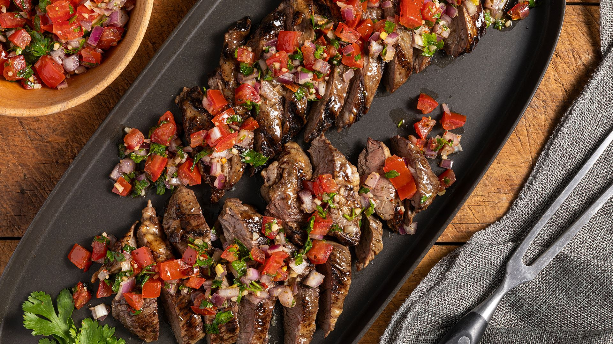

NUESTRO MENU

Churrasco Italiano
El churrasco italiano es un delicioso corte de carne asada, marinado con hierbas y especias, que se sirve en rebanadas finas. A menudo se acompaña de chimichurri y se disfruta con pan fresco.
$15
Churrasco de Ternera
El churrasco de ternera es un corte jugoso y tierno, caracterizado por su sabor intenso y textura suave. Perfecto para disfrutar en una comida informal o una celebración.
$40

Churrasco Argentino
El churrasco argentino es un corte de carne de res, típicamente preparado a la parrilla, que destaca por su sabor y jugosidad. Ideal para compartir en asados.
$45Churrasco al Carbón
Un corte especial cocinado al carbón, brindando un sabor ahumado único que deleitará a los amantes de la carne.
$50